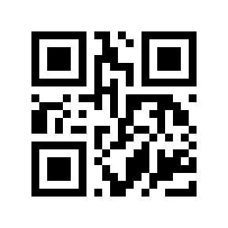

SAMANTHA CAMPOS · GESTÃO DE EVENTOS
Helena & Miguel
Casamento fictício · 12/06/2027 · Mogi das Cruzes
Preparando demonstração para uso offline…
UMA LISTA, SEM REENVIO ACIDENTAL
Cada convidado no seu fluxo.
Na simulação, a seleção inclui apenas contatos com permissão e sem convite já enviado. A contagem é de pessoas, com QR individual; gestão de famílias e acompanhantes será validada no piloto.
| Nome | Permissão | Convite | Presença |
|---|
ENVIO PELA API OFICIAL · PROPOSTA
Revisar o envio
Modelo demonstrativo: “Olá, {{nome}}! Confirme sua presença no casamento de Helena e Miguel pelo seu link individual.”
Base de referência: US$ 0,005 por mensagem em cada direção, conforme tabela pública da Twilio consultada em 20/11/2026. Tarifas da Meta são cobradas separadamente quando aplicáveis.
Uma resposta pode gerar mais de uma mensagem. Confirmações feitas somente pelo site não são mensagens recebidas no WhatsApp.
Depende da categoria do modelo, destino e regras vigentes. Campo vazio significa custo da Meta ainda não confirmado; não significa gratuidade.
Conversão ilustrativa, sem impostos, encargos cambiais, aluguel de número, adicionais ou outros custos. A estimativa considera um envio por destinatário habilitado; lembretes e respostas adicionais aumentam o consumo. Consultar tabela da Twilio.
Nenhuma mensagem será enviada de verdade.
Na implantação: fila por destinatário, modelos aprovados quando exigidos, acompanhamento de falhas e histórico de custos por evento.
O CONVIDADO CONFIRMA ANTES. A EQUIPE REGISTRA A CHEGADA.
Do convite à recepção.
HELENA & MIGUEL
Seu convite
Podemos contar com você na celebração?
Presença confirmada · demonstrativo

Na versão real, cada pessoa terá link e QR com identificador opaco. Este exemplo usa códigos públicos de teste.
RECEPÇÃO · EQUIPE
Registrar entrada
Leia o QR ou localize pelo nome. No celular, abra a câmera pelo botão abaixo ou leia uma foto do QR. A imagem é processada no aparelho; nada é enviado ao servidor.
Aponte a câmera traseira para o QR individual do convidado. A leitura registra a entrada após validar o código.
Câmera fechada. Sua permissão será solicitada ao iniciar a leitura.
Teste também uma segunda leitura do mesmo código.
QR deve pertencer ao evento e a convidado confirmado. A repetição é bloqueada neste aparelho. Conferência de nome e grupo continua necessária; QR não substitui a validação da equipe.
Após preparar o evento, o registro pode ficar no aparelho. Sem rede, outro posto não sabe dessa entrada. No piloto, usar um aparelho responsável ou dividir listas entre postos.
ESBOÇO DE EVOLUÇÃO · FORA DO PRIMEIRO PILOTO
Dinheiro do casal e da empresa, separados.
Exemplo: os noivos pagam o buffet diretamente; a assessoria paga sua equipe de apoio. Ambos ficam visíveis, cada um no seu fluxo.
| Favorecido | Quem paga | Categoria | Vencimento | Valor | Status | Ação de teste |
|---|
Registrar pagamento não transfere dinheiro. Na versão operacional: parcelas, comprovante, responsável pela conferência e trilha de alterações. Os custos da API serão registrados separadamente, vinculados ao evento.
NO DIA DO EVENTO
Um roteiro que acompanha a equipe.
Horários previstos, responsáveis e registros do dia. Toda marcação de teste identifica quem a realizou.
Tarefas, respostas e entradas desta demonstração ficam somente neste navegador. Atualizar a página preserva o teste se o armazenamento local estiver disponível.
PWA · MODO EVENTO
Preparar antes de sair.
A demonstração instala um cache local das telas e do QR de exemplo após a primeira visita online. O navegador pode permitir adicioná-la à tela inicial. Aguarde a confirmação de preparo.
Verificando cache offline…
No produto: download seletivo dos dados autorizados, horário da última sincronização e fila de alterações pendentes. Nesta demonstração não existe servidor nem sincronização entre aparelhos.
O envio simulado é bloqueado quando o navegador informa ausência de rede. Consulta e registros de teste podem continuar localmente. A versão real precisa ser testada em modo avião nos aparelhos da equipe.
REGISTRO RÁPIDO · TEXTO OU ÁUDIO
Conte o que aconteceu.
Escreva livremente ou grave uma anotação de voz. A demonstração permite revisar uma sugestão de atualização do cronograma.
A sugestão deste protótipo usa regras locais simples para os quatro itens de exemplo. Não há IA conectada. O produto deverá interpretar contexto e negações, pedir revisão quando houver dúvida e preservar o original.
Uma anotação de voz
Microfone fechado. Só será solicitado ao tocar em gravar. Use conteúdo fictício.
A gravação real fica apenas no aparelho, quando o armazenamento está disponível. Não transcrevemos seu áudio nesta demonstração. O botão acima usa um texto fictício, independente do que foi gravado. No produto: áudio original → transcrição → interpretação → registro revisado ou aplicação automática conforme a regra configurada.
Nenhuma anotação adicionada.
Registro do dia
ACERVO DO CASAMENTO
As fotos também ficam organizadas.
Guarde os links recebidos do fotógrafo junto ao evento. Nesta demonstração, o endereço fica somente neste navegador; não acessamos nem importamos as fotos.
Use um link de exemplo, sem conteúdo privado.
POSSIBILIDADE FUTURA · A VALIDAR
Do evento ao portfólio.
Uma evolução possível é selecionar fotos de um álbum e preparar sua divulgação no site e no Instagram. Depende de análise técnica, acesso aos arquivos, autorização de uso das imagens e permissões das plataformas.
Receber um link não garante acesso às fotos nem permissão para publicá-las. A integração automática com Google e Instagram não faz parte desta demonstração.